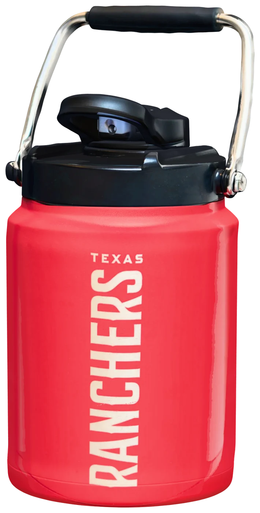
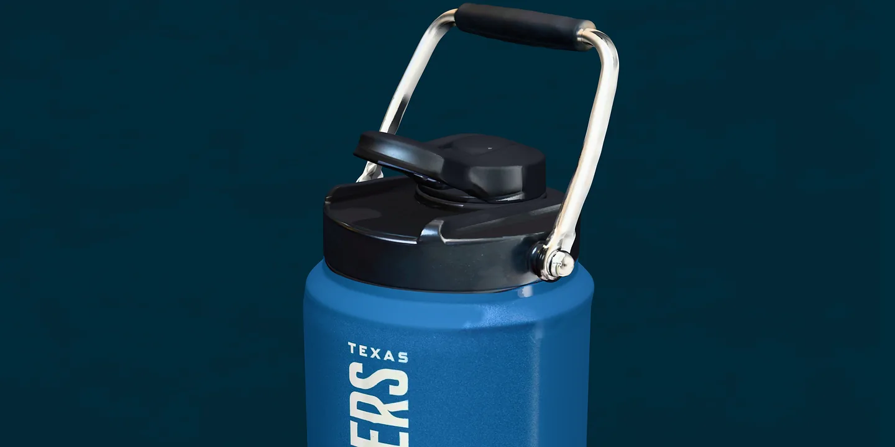
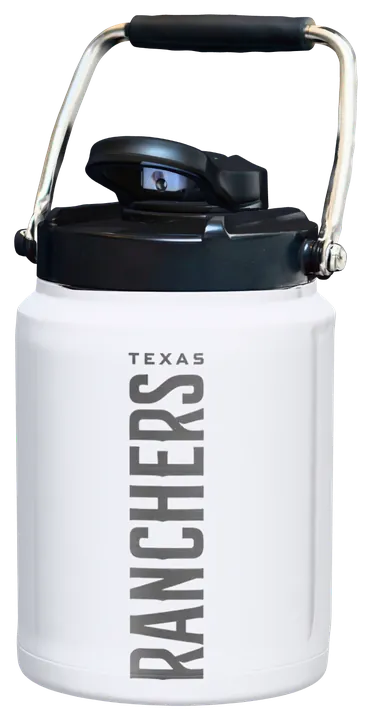
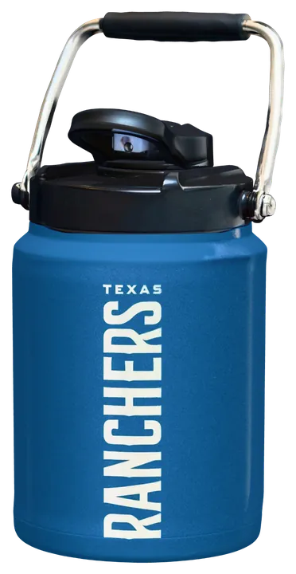

Texas Ranchers x Ice Shaker
Still thinking it over?
60+hours cold.Texasheat.
Stay cold.
The Texas Ranchers x Ice Shaker Half Gallon keeps it cold for 60+ hours. Red, white or navy.
Official merch of the Texas Ranchers, Austin's Major League Pickleball club.
$75Free shipping through Dec 14 · US ordersFree shipping ends Dec 14
Shop the half gallon
Choose yours

$75Free shipping through Dec 14 · US ordersFree shipping ends Dec 14
Shop the half gallon
Built to stay cold
- InsulationDouble-wall vacuum insulated: cold for 60+ hours, no condensation outside
- LidFlip-up Sport Straw to sip, or twist the lid off to pour
- CarryCarry handle across the top
- BuildKitchen-grade stainless steel: holds no odors, leaves no metallic taste
Keep it cold
- Texas Ranchers x Ice Shaker Half Gallon Jug$75Red

Texas Ranchers x Ice Shaker Half Gallon Jug$75White
Texas Ranchers x Ice Shaker Half Gallon Jug$75Navy Texas Ranchers x Ice Shaker Water Bottle$40Navy
Texas Ranchers x Ice Shaker Water Bottle$40Navy
Add the 26 oz Water Bottle: the same Ice Shaker build, cold for 30+ hours.
Stay cold.
Free shipping through Dec 14 · US ordersFree shipping ends Dec 14 Shop the half gallon#RideTall